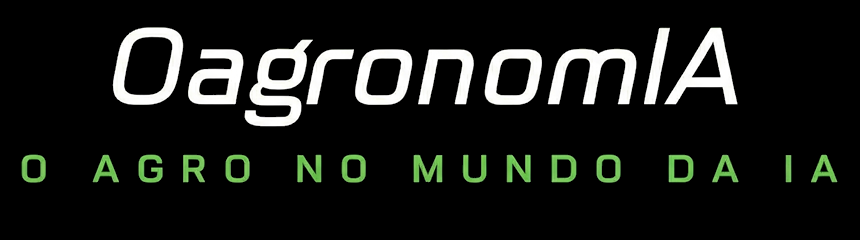

Benchmarking de uso de IA · Sessões executivas · Prévia
O que ouvimos na
primeira sessão executiva
Leitura preliminar de uma conversa com uma liderança de tecnologia agrícola de um grande grupo do agronegócio, organizada pelos pilares de IA do estudo e cruzada com o que os estudos públicos já mostram. Uma sessão não é amostra: são sinais a confirmar.
Temas do roteiro
7 de 10 completos
Perfil
Liderança de tecnologia agrícola, grãos
Contratante
Acelen Energia Renovável
Documento
Prévia de resultados — sessão executiva 1
Nº / Revisão
BIA-ACL-RP-01 · Rev. 00
Data
14/10/2026 · sessão realizada em 13/10/2026
Como ler
Como ler esta prévia
Sinais de uma conversa, lidos ao lado dos dados públicos
O que esta prévia é
- Uma sessão de 2 a 4. O que aparece aqui são sinais, não conclusões. Eles serão testados nas próximas conversas e entram no relatório só de forma agregada.
- Anonimizada. Sem nome, empresa, sistemas, fornecedores ou números que identifiquem o entrevistado.
- Cruzada com fontes públicas. Cada pilar traz, ao lado, o que os estudos do catálogo já medem, com o identificador da fonte (M###) e a página.
Como está organizada
- Quatro pilares de IA: IA preditiva (aprendizado de máquina), IA generativa e agentes, automação e máquinas autônomas, e sustentabilidade da IA. Nem toda IA é IA generativa.
- Fundações transversais: governança, pessoas e dados, e a medição de valor.
- As três frentes do estudo aparecem como selos em cada pilar; a cobertura do roteiro e a leitura na régua de maturidade fecham a prévia.
Leitura nossa marca a interpretação da equipe. Números de pesquisas diferentes não se somam nem se comparam como se fossem a mesma medida: cada um vem com sua amostra.
Síntese
Síntese
Seis sinais da primeira sessão
01
Dados prontos, IA generativa travada
Há mais de uma década de dados agrícolas centralizados e organizados. Mesmo assim, nenhuma iniciativa de IA generativa gerou valor medido.
02
O bloqueio vem antes do retorno
"Não estou conseguindo nem criar as coisas." Governança e segurança chegam ao nível de impedir o avanço; o retorno nem chega a ser medido.
03
Uso por fora como sintoma
Equipamento e assinaturas pessoais de IA para cumprir as entregas, com cuidado próprio sobre o que é sensível. "A IA já está dentro da empresa."
04
O valor visível está no ferro
O exemplo de IA com retorno mensurável é a pulverização seletiva com câmeras: no fim do dia se sabe quanto insumo foi poupado.
05
Autonomia é necessidade, interoperabilidade é o gargalo
Máquinas já ficaram paradas nesta safra por falta de operador. Sem padrões comuns entre fabricantes, e sem cibersegurança na máquina, não há autonomia.
06
Fornecedor se escolhe pelo custo
Testes recentes com máquinas chinesas tiveram desempenho equivalente. Soberania, na prática, é cortar o que é crítico e liberar o resto.
Régua de maturidade
Leitura nossa na régua de maturidade
Maturidade desigual entre as dimensões
| Dimensão | Estágio | O que sustenta a leitura |
|---|
| Estratégia e governança | 2 | Comitê horizontal de IA criado há pouco e "ainda não como deveria"; governança e segurança no nível de impedir; sem estratégia de implementação para a IA generativa. |
| Dados e infraestrutura | 3 | Repositório central de dados há mais de uma década, com dados tabulares e georreferenciados e integração por API; ainda sem uso em IA. |
| Organização e pessoas | 1–2 | Sem área de IA, por escolha (IA horizontal); letramento baixo nas equipes de campo e na TI ligada à agricultura; o perfil que une campo e tecnologia é raro. |
| Aplicações e valor | 1 a 3 | IA generativa: uso individual e informal (1). IA embarcada no campo: pulverização seletiva em uso, com economia medida no dia (3). |
Ressalvas. A régua de cinco estágios não foi mostrada ao entrevistado; a leitura é da equipe, a partir do relato, e serve só como hipótese. Pela regra do estudo (o estágio mais alto com evidência em três das quatro dimensões), o estágio geral seria 2, com o campo à frente da IA generativa.
Pilar 1
Pilar 1 · IA preditiva (aprendizado de máquina)
A base histórica existe; o valor está no clima e no comportamento
Frente 1Frente 2
O que ouvimos
- Repositório central há mais de uma década, pensado para integrar sistemas; a maior vantagem das empresas que se prepararam cedo.
- Nem todo dado histórico serve. Dados de máquina e de cultivar antigos perdem valor com a mudança de frota e de genética.
- Clima e comportamento operacional (como máquinas e equipes reagem a cada condição) mantêm valor preditivo: quanto mais longa a série, melhor.
- "Dados não são dados: dados custam." A base está pronta, mas ainda não foi aplicada em modelos.
O que os estudos mostram
R$ 12,50
de retorno líquido por R$ 1 investido em agricultura digital, segundo a SLC; não separa a parcela da IA
[M331, p. 89]
+6%
de produtividade nos talhões com recomendação digital por talhão, contra controle (Brasil, verão 2025/26; análise da própria empresa)
[M789, p. 30]
48%
das empresas brasileiras têm dados bem estruturados e governados; 49% têm dados parciais, com lacunas (107 decisores de TI, abr/2026)
[M141, p. 21]
2,99
de 5 é a nota da cultura de dados, a dimensão mais fraca entre 84 executivos do agro (mar-mai/2026)
[M748, p. 32]
Leitura nossa. É o pilar com mais métricas de resultado publicadas, e elas vêm de dados estruturados e séries longas. A sessão confirma o pré-requisito: a base histórica, com escolha do que ainda serve.
Pilar 2
Pilar 2 · IA generativa e agentes
Demanda clara, uso informal, nenhum valor medido
Frente 1Frente 3
O que ouvimos
- Nenhuma iniciativa de IA generativa com valor medido. O bloqueio é anterior ao retorno: pela via oficial, "não sai".
- A demanda vem do topo: a liderança quer perguntar, pelo aplicativo de mensagens, sobre operações e clima e ter a resposta na hora.
- Ambiente corporativo de um grande fornecedor implantado, mas com acesso travado e sem quem saiba otimizar o consumo.
- Uso por conta própria para cumprir entregas; programar com ajuda da IA ficou ao alcance de quem não é desenvolvedor.
- Dúvidas de arquitetura e custo: consumo de tokens e custo da mensageria oficial. Nenhum agente em produção.
O que os estudos mostram
78%
dos executivos do agro têm IA na agenda de 2026, mas 42% ainda estão em piloto ou avaliação e 36% têm projetos em produção (84 executivos)
[M748, p. 32, 52]
37%
atribuem algum efeito no EBIT à IA; cerca de 20% dizem que o custo de operação, inclusive tokens, restringiu o uso (1.719 respondentes, global)
[M028, p. 3, 12]
~60%
dos trabalhadores têm acesso a ferramentas de IA aprovadas pela empresa, ante menos de 40% um ano antes (3.235 líderes, 24 países)
[M065, p. 4]
33%
das empresas brasileiras confiam na própria capacidade de medir o ROI da IA (1.000 líderes)
[M114, p. 2]
Leitura nossa. A sessão reproduz o quadro das pesquisas: adoção alta no discurso, pouco resultado medido. O que falta não é tecnologia; é estratégia de implementação, acesso liberado com controle e alguém que una o processo à ferramenta.
Pilar 3
Pilar 3 · Automação e máquinas autônomas
"Botar inteligência no ferro": a prioridade que está atrasada
Frente 3Frente 1
O que ouvimos
- Automação e visão computacional são vistas como negligenciadas diante da atenção dada à IA generativa.
- Escassez de mão de obra já presente: máquinas ficaram paradas nesta safra por falta de operador.
- Operações críticas sem garantia de qualidade: faixa de distribuição de adubo e profundidade de plantio ainda conferidas por equipes a pé.
- Interoperabilidade é o gargalo: já é difícil com poucos fabricantes e piora com novos entrantes. Sem padrões, não há autonomia.
- Cibersegurança precisa chegar à máquina autônoma, não só ao dado; computação na borda é vista com bons olhos.
O que os estudos mostram
até 50%
de economia de herbicida com pulverização seletiva por câmeras, em mais de 5 milhões de acres em 2025 (dado do fabricante, teto)
[M373, p. 20]
58%
das empresas já usam IA física, ao menos de forma limitada; a projeção é de 80% em 2 anos (3.235 líderes, 24 países)
[M065, p. 6, 22]
53,5%
dos moradores de áreas rurais têm cobertura 4G, contra 99,6% nas áreas urbanas (Brasil, 2025)
[M179, p. 7]
84%
dos drones de pulverização registrados no Brasil eram de um único fabricante chinês em jun/2025
[M845, p. 1]
Leitura nossa. A autonomia física deixou de ser opção por causa da mão de obra, mas depende de três alicerces que nenhuma empresa resolve sozinha: conectividade no campo, padrões de comunicação entre máquinas e segurança na ponta.
Pilar 4
Pilar 4 · Sustentabilidade da IA
Tema ausente na conversa, presente na agenda do mercado
Frente 3
O que ouvimos
- O tema não apareceu. A conversa ficou em dados, governança, IA generativa e autonomia; a pegada ambiental da IA não foi citada.
- Para as próximas sessões: perguntar se a empresa mede ou cobra dos fornecedores energia, carbono e água do uso de IA, e se isso entra em relatórios e certificações.
Por que importa para uma empresa de combustíveis renováveis (leitura nossa). Ela vende redução de emissões medida e certificada; a IA entra no inventário e na narrativa. O uso corporativo é pequeno em ordem de grandeza, mas exige números corretos e método.
O que os estudos mostram
0,24Wh
por consulta de texto mediana de um grande assistente de IA, com 0,03 g de CO₂e e 0,26 mL de água (mai/2025)
[M562, p. 7]
33×
menos energia por consulta em 12 meses no mesmo assistente, entre mai/2024 e mai/2025
[M562, p. 1, 7]
200–400TWh
é a faixa plausível do consumo de IA em data centers em 2030, ante 10 a 50 TWh em 2023
[M577, p. 8, 40-41]
> 70g
de CO₂ por kWh é a intensidade da geração elétrica no Brasil em 2025, contra 435 g na média mundial
[M575, p. 105-106, 162]
Fundações
Fundações transversais · governança, pessoas e dados
Cinco barreiras citadas, e o que as pesquisas confirmam
Frente 2Frente 1
O que ouvimos
- Medo: de vazamento de dados, desproporcional ao valor que dados produtivos têm para terceiros. É preciso separar o que é de fato crítico.
- Credibilidade: a resposta probabilística da IA gera desconfiança.
- Letramento: entender o que a IA faz, seus limites e onde aplicá-la; letramento, não treinamento de desenvolvimento.
- Medição do ganho: o primeiro ganho é tempo e conforto, não dinheiro.
- Burocracia de TI: visão "quase nula" do potencial da IA na área agrícola; iniciativas nascem por fora e só depois são oficializadas.
O que os estudos mostram
44%
dos executivos do agro citam cultura organizacional resistente como o principal obstáculo (84 executivos, mar-mai/2026)
[M748, p. 52]
29%
citam segurança e privacidade como gargalo; 28%, falta de expertise; 22%, baixa maturidade de dados (140 empresas no Brasil, jul/2026)
[M005, p. 3]
50%
apontam a falta de pessoal qualificado como a principal barreira (107 decisores de TI no Brasil, abr/2026)
[M141, p. 26]
71%
dizem que seria difícil trocar hoje o principal fornecedor ou modelo de IA (1.000 executivos, 16 países)
[M134, p. 4-6]
Leitura nossa. A governança que protege também pode travar. As empresas que avançam liberam o uso com controle e separam o que é crítico do resto.
Valor e medição
Valor e medição · Frente 1
O ganho chega antes como tempo do que como dinheiro
O que ouvimos
- Retorno da IA generativa ainda não mensurável, porque nada saiu do papel pela via oficial.
- Proposta de valor inicial: tempo e conforto. Exemplo: relatórios e mapas de chuva gerados sozinhos, em vez de montados à mão todos os dias.
- Retorno comprovado onde a IA está na máquina: a economia de insumo da pulverização seletiva é medida no dia.
- A previsão é o benefício final esperado da IA, depois do conforto.
O que os estudos mostram
23%
dos executivos do agro medem o ROI dos projetos de TI com método formal; 60% medem de forma parcial ou informal e 13% não medem
[M748, p. 52]
7%
das empresas brasileiras calculam o ROI das soluções de IA (194 entrevistas, margem de 7 pontos)
[M495, p. 3]
64%
medem a IA por economia de tempo ou custo; 38%, por receita (1.000 líderes no Brasil)
[M114, p. 10]
12%
comparam de forma consistente o valor gerado pela IA com o seu custo (2.131 líderes, 20 países)
[M072, p. 3]
Leitura nossa. Medir desde o piloto, começando pelo tempo poupado, e separar o ganho da IA do ganho de outras tecnologias, é o caminho que tanto a sessão quanto as pesquisas sugerem.
Cobertura do roteiro
Cobertura do questionário (BIA-ACL-SE-02)
Sete temas completos, três parciais
| # | Tema | Cobertura | Sinal principal |
|---|
| 01 | Trajetória e estágio atual | Coberto | De sistemas generalistas a dados centralizados há mais de uma década; régua não mostrada |
| 02 | Valor real | Coberto | Nenhum valor medido em IA generativa; ganho visível na pulverização seletiva |
| 03 | O que não deu certo | Parcial | Sem fracasso de modelagem porque nada foi construído pela via oficial; ambiente corporativo travado |
| 04 | Alicerces e sequência | Coberto | Dados primeiro; nem todo dado histórico serve |
| 05 | Governança e riscos | Coberto | Comitê recente; governança e TI no nível de impedir; iniciativas por fora |
| 06 | Organização e pessoas | Coberto | IA horizontal; falta quem une campo e tecnologia; letramento como prioridade |
| 07 | IA generativa e agentes | Coberto | Uso individual e informal; demanda da liderança por respostas rápidas |
| 08 | Campo e sistemas autônomos | Parcial | Autonomia como necessidade; humanoides e referências internacionais não entraram na resposta |
| 09 | Dados, parceiros e soberania | Coberto | Corte seletivo do que é crítico; fornecedor pelo custo; interoperabilidade |
| 10 | Futuro e conselho | Parcial | Grandes empresas de IA não vão se especializar no agro; espaço para empresas derivadas |
Próximos passos
Próximos passos
O que fazer com estes sinais
Nas próximas sessões
- Mostrar a régua de cinco estágios e pedir a evidência de cada posição.
- Cobrir o que ficou de fora: robôs humanoides, referências internacionais e sustentabilidade da IA.
- Testar os seis sinais desta sessão em outros perfis.
No estudo
- Consolidar os insights só de forma agregada, depois de pelo menos duas sessões.
- Levar os pilares de IA para as fichas e para o framework de maturidade.
- Aprofundar interoperabilidade e autonomia na Frente 3, com Deere e DJI, propostas para o painel.
Para a Acelen (leitura nossa)
- Ter dados não basta: a estratégia de IA precisa de um caminho de implementação, com governança que libere com controle.
- Letramento vem antes de ferramenta.
- Medir desde o primeiro piloto, começando pelo tempo poupado.
Confidencialidade. Nomes de executivos e de empresas participantes não aparecem em nenhum material; gravação e transcrição brutas ficam com a OagronomIA e são apagadas após o registro anonimizado.